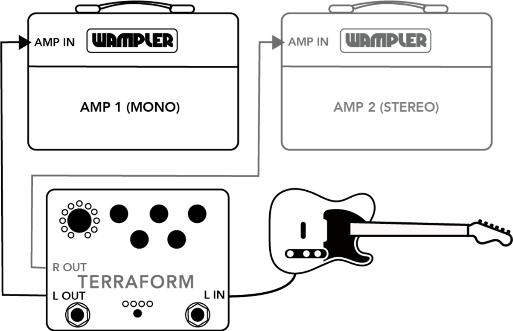
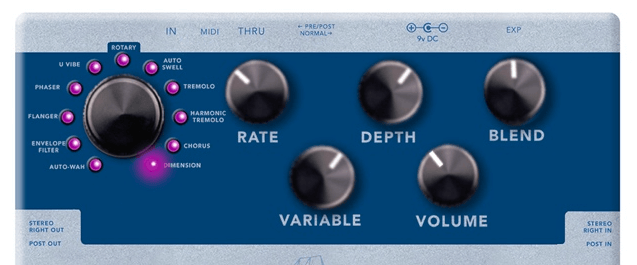
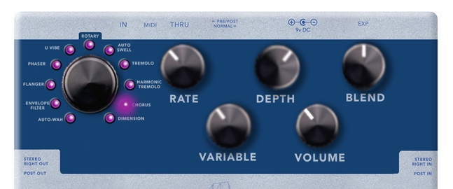
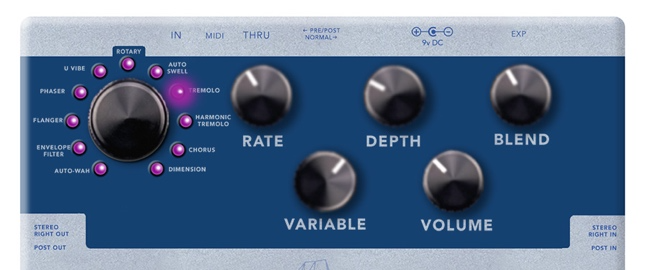
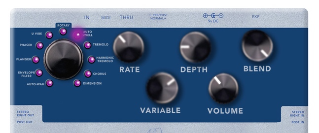
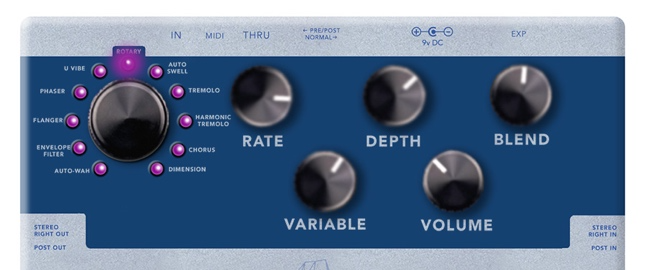
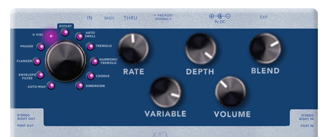
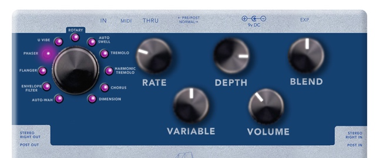
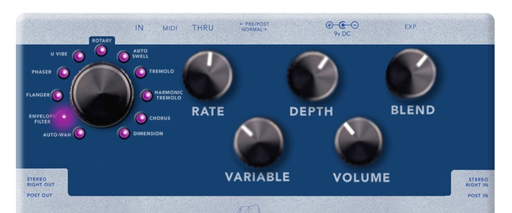
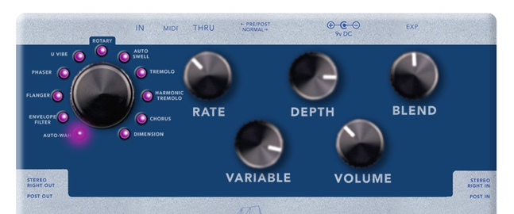

Welcome
Without doubt the WAMPLER TERRAFORM is the first of a new breed of pedals from WAMPLER. We’ve completely thrown ourselves into the realms of digital to bring you the best multi modulation pedal that is very easy to use, has all the essential features, and still carries that legendary Wampler tone.
We’ve taken 11 all original and custom designed modulation effects and put them inside one small footprint stompbox... we’ve made it fully programmable, true stereo, split mono (so you can separate effects from pre gain to post gain), given it midi control (including the ability to midi map and control Tap Tempo), presets, an expression input that you can assign to ANY of the parameters... And most importantly, we’ve made those 11 effects that sound better than you could have ever imagined and every bit Wampler.
We don’t doubt for a minute that you hate reading manuals as much as we do, so we’ve tried to make this simple for you, we don’t really like talking in techy gibberish or blinding you with a bunch of nerdy stuff you literally have no interest in, so you won’t find any (much) here!
If you’d rather watch a bunch of videos on how to use the TERRAFORM, go hit up the Wampler site and checkout some of the videos www.wamplerpedals.com
Pedal Legend
THE EFFECTS
Dimension
INTERESTING STUFF: When just a single wave chorus isn’t enough for you, we add some more. This doesn’t make it more chorusy (did I just make a word up there?), it adds a lot of depth. If the chorus makes your tone wet, the Dimension has the option to completely soak it. Balance the BLEND control to find the point where it washes over the signal to the amount that makes you happy, or even the amount it makes you sea sick.
Chorus
INTERESTING STUFF: We all love it and I think at some point have used far too much of this effect. The TERRAFORM is voiced to give you the most control over your chorus as possible. If you love the old Japanese style, roll that bass end off (VARIABLE), if you love the vintage American style, roll it back in (VARIABLE). Balance the BLEND to ensure it doesn’t wash over too much, or totally wash over everything. Turn the BLEND up fully clockwise to achieve a cool vibrato effect (secret effect block right there, free of charge, you’re welcome!)
Harmonic Tremolo
INTERESTING STUFF: This is the secret weapon of so many tremolo sounds, it’s wet, kinda like a Rotary but without all the rotation stuff. Perfect for bringing out the funk, quite the exclusive tone. Use the VARIABLE control to see how far you want to push the width and balance it with the BLEND, finding the sweet spot between those two is the key to achieving the perfect Harmonic Tremolo effect. The DEPTH control is your friend here, minimum is almost none, near maximum is full sine wave and when you have that depth control all the way round CW, you have a total choppy Squarewave.
Tremolo
INTERESTING STUFF: “It ain’t the blues if it ain’t got no Tremolo on it” (source unknown, I didn’t just make it up, I promise). Well, you know, it’s kinda true though ain’t it. To add that slight wobble right up to a total chop fest... The DEPTH control is very important, minimum is almost none, near maximum is full sine wave and when you have that depth control all the way round CW, you have that perfect choppy Square-wave Tremolo.
Auto Swell
INTERESTING STUFF: This one is all about finding the balance with your attack time (RATE) and pick attack (BLEND) response. When you hit it right, you will be able to control the speed it comes in and make your playing dynamic, find the sweet spot on the pick attack (VARIABLE) to the point where you can bring in beautiful chord pads by playing softer, and have the notes arrive quicker when playing single notes.
Rotary
INTERESTING STUFF: The power of the ROTARY is in the ramp. Switching between the ‘resting state’ (which is lots of rotations a second) on slow and ‘BOOM’ (which is lots more rotations a second) on fast, is what makes it sound so awesome. Finding that ramp speed is key, once you have found it, you can make your chord changes pop as the rotary speeds up or slows down as you do move across the song. With a little natural speaker compression and grit thrown in as well, you have that full ROTARY cabinet at your feet, but without the backache.
U Vibe
INTERESTING STUFF: Finally, a Wampler Vibe effect. We’ve made this as wet as possible, with the control over the thump that we all know and love. When you have the VARIABLE control set up towards the CW position, that classic Vibe thump is there. Perfect for running into a dirty signal. When it’s more CWW, the higher part of the wave is bought forward, making it a much cleaner and more subtle effect. Find your place. Turn up the Vibe and party like it’s 1967, baby.
Phaser
INTERESTING STUFF: The one to tweak here is the BLEND control. A lot of your favorite PHASER tones are NOT a straight 50/50 between dry and wet, or even a 100/0 balance, finding the right point on your BLEND control allows the PHASER to sit within your tone, now... it can sit right on top, in the background or just peeking out from behind the tone curtain to give you some movement.
Flanger
INTERESTING STUFF: All the fun stuff here is in the VARIABLE, BLEND and DEPTH control. You’re gonna have to keep an eye on the blend control, as the natural place, you would think, is to put it straight up at noon. This MAY make it overbearing, so drop it down so it’s not dominating the sound. Don’t be surprised if you have it MUCH lower than you think, it’s perfectly natural. The VARIABLE controls the type of whoosh you get, and the DEPTH cam change the response in a heartbeat.
Envelope Filter
INTERESTING STUFF: Best to start with the RATE and VARIABLE at high noon and the blend maxed, this will give you a real good feel for the effect before you start tweaking. This is the point where you start moving the DEPTH control to darkness of the effect. Remember, the difference from the AUTOWAH is that the effect reacts to your pick attack!
Auto Wah
INTERESTING STUFF: Best to start with the RATE and VARIABLE straight up and the blend maxed, this will give you a feel for the effect before you start tweaking. This is the point where you start moving the DEPTH which controls how high the filter goes and the Q will control the resonance.
Routing
The TERRAFORM gives you two options, full true stereo or mono (NORMAL mode), and within that NORMAL mode you can separate the TERRAFORM to place certain effects in different places within your signal chain by going PRE/POST.
Stereo
Place the NORMAL/PRE POST switch to NORMAL If you are lucky enough to be running a full stereo rig, or even a wet/dry/wet rig, the TERRAFORM will make your tone ENORMOUS. We’ve examined every effect individually to make sure they exist and perform in the best possible way in stereo. You will experience the kind of washy tones that will surround you, engulf you and make you feel like you are swimming in a glorious spring water pool of delicious modulated wetness. And yes, I did just say that, because... well, it’s true. Open your sound, open your amps up, and get those swimming shorts on. It’s time to go for a dip.
Mono
Place the NORMAL/PRE POST switch to NORMAL If you don’t have two amps, you can still enjoy the depth of the TERRAFORM. Simply plug your input signal into the PRE/L jack, and use either output jack to your amp.
Pre/Post
Place the NORMAL/PRE POST switch to /POST To make the most of assigning individual effects into specific places in your mono signal chain, it’s time to explore the PRE/POST options. For example, a lot of players like their U VIBE before their gain stages (whether that be an amps preamp stage, or their favorite dirt pedal) and the CHORUS after (again, either in the effects loop of the amp or after their dirt pedals. You can program the TERRAFORM (in PRE/POST mode) to place each effect either PRE or POST.
The TERRAFORM ships with some effects pre and some post, here is how they are when you first fire it up.
PRE – U Vibe, Phaser, Flanger, Envelope Filter, Auto Wah
POST - Dimension, Chorus, Tremolo, Harmonic Tremolo, Auto Swell, Rotary
STEREO / MONO
TERRAFORM will understand if you are running in mono - Make sure routing switch is set to NORMAL.
PRE / POST - IN LINE

Make sure the routing switch is set to PRE/POST
PRE / POST - FX LOOP

Make sure the routing switch is set to PRE/POST
Assigning Pre/Post
To assign the effects into be either PRE or POST globally, please follow these ridiculously simple steps.
- Disconnect the TERRAFORM from power.
- Simultaneously hold down both the BYPASS stomp and the TAP TEMPO stomp.
- Power up the TERRAFORM.
- Turn the PROGRAM CONTROL dial to the effect you want to place, one of the program LEDs will begin to blink, and the bypass LED will light either green or blue.
- To set the highlighted program to “Pre Mode”, press the BYPASS stomp. The BYPASS LED will light green.
- To set the highlighted program to “Post Mode”, press the TAP TEMPO stomp. The BYPASS LED will light blue
- Repeat steps 4-6 for each program.
- Once customization is complete, press the Preset Switch to save the new Pre/Post Mode settings./li>
- The BYPASS LED and TAP TEMPO LED will light green when saving is complete. Remove power re-apply power to pedal to resume normal use.
Those of you who are eagle-eyed will have noticed we said “global” when talking about allocating PRE/POST – this is how each effect is placed by default. But... if you desire... you can go one stage further and allocate each effects in its PRE/POST position according to each preset ... so, no matter where you have placed the effect globally, you can change it to the other ‘side’ for any particular preset!
Here's how you do it...
- Set the effect settings the way you’d like, and then press and hold the preset button to initiate a preset save.
- While the preset LEDs are blinking, the bypass LED will light green or blue to indicate the pre or post position of the current effect. This will most likely reflect the global setting.
- Press the bypass switch to assign the preset to “pre”, or the tap tempo switch to assign it to “post”. The bypass LED will change color accordingly.
- Press and hold the preset switch to save the preset (along with the new pre/post setting).
- Now, when you load the preset you just saved, the pre/post setting will be loaded with it, instead of the global pre/post setting for that effect.
- NOTE: this new pre/post setting only applies to the preset that was just saved. Using the program knob to change programs will load the global pre/post setting for each effect. Please see the respective section to change the global pre/post setting.
NOTE: if you are using the pedal in normal/stereo mode, these settings will have no effect on the routing of your effects (although the bypass LED will still light green or blue when you are saving a preset. You may ignore these settings).
Expression Pedal
You can assign an external expression pedal to control ANY of the 5 knobs on the TERRAFORM. This information is also stored within a patch, so when you program the TERRAFORM to recognize an expression pedal, each patch will remember how you want the expression to react, or you can use it on the fly.
To configure the expression pedal, all you have to do is this.
- Press and hold the BYPASS stomp, and then press the TAP TEMPO stomp. The TAP TEMPO LED will flash RED (release both switches immediately).
- Move the desired control to the first position. This will be the “heel” position of your expression pedal.
- Press the TAP TEMPO stomp. The TAP TEMPO LED will blink in response. Move the same control to the final position. This will be the “toe” position of your expression pedal.
- Press the TAP TEMPO stomp. The TAP TEMPO LED will blink in response and return to its normal color. Your expression pedal setting is now saved!
Note: Be sure to save your preset soon after configuration; loading another preset will overwrite your hard work!
PRESETS
The TERRAFORM has 8 preset locations for you to save your favorite sounds. You’ll see that there are 4 LED’s above the preset switch. Presets 1-4 are shown with the 1 LED on and three off, 5-8 are 3 on and 1 off.
Saving a preset
Saving a preset is simple, of course it is, it’s the TERRAFORM. Just follow these steps.
- (Optional) Configure Expression Pedal (see above).
- Set all the controls to the desired setting.
- Press and hold the Preset Switch until the Preset LEDs begin to blink.
- Press the Preset Switch until the desired preset location is indicated by the Preset LEDs.
- (Optional) To associate a preset with a MIDI program change, send the MIDI program change from your MIDI device to the Terraform before the step 6. The Terraform will switch to the saved preset whenever it receives that MIDI program change.
- Press and hold the Preset Switch until the Preset LEDs blink to indicate that the preset has been saved.
There are three ways to recall a preset.
- Press the PRESET switch to scroll through the 8 presets.
- Hold down the TAP TEMPO stomp until the LED changes to green. You can then use the TAP TEMPO stomp to scroll through the 8 presets. To return to normal TAP TEMPO mode, hold down the TAP TEMPO stomp until the LED changes back to blue.
- Recall the preset via a MIDI preset change via a MIDI controller. Recall the preset via a MIDI preset change via a MIDI controller.
MIDI
Many players are already some way down the road when it comes to using MIDI within their rigs, but also there are a lot that see the word MIDI and run to the hills. The MIDI applications within the TERRAFORM are really easy, you can recall a patch from the fully midi-mappable memory bank of the TERRAFORM and control the tap tempo speed.
Midi Papping
You can associate ANY incoming preset change of midi between 1- 128 to any of the 8 preset locations. So, if you have 4 songs that you want a nice chorus, you don’t have to create 4 different patches (like some other bigger box modulation units we can think of) you can just point the TERRAFORM to call up that one patch from those separate incoming midi patch change commands. As listed above, during the SAVING A PRESET process, step 5 gives the TERRAFORM the midi information it requires to recall a patch. Just send the program change information from the midi controller during this step and the TERRAFORM will remember it.
The Geeky Stuff
You’ll be delighted to know that this will be the most sparse section in the manual, as there isn’t a lot to talk about. Here it is in full.
PROGRAMMING CHANGE: To change the preset, send a MIDI program change on any channel with the desired program as the program byte. Example: PC 8 -> loads preset stored in patch 8
TAP TEMPO: To trigger a tap tempo press, send a MIDI control change on any channel with 81 and 0 as the controller and value bytes. Example: CC 81 0 -> triggers tap tempo
TRS Specifications

The TERRAFORM communicates with TRS type A cables (Tip = 5, Ring = 4, Sleeve = 2.
MIDI BYPASS: To assign “bypass” to a MIDI program change, press and hold the preset switch (as if you were saving a preset). Press the preset switch until all four preset LEDs blink simultaneously. Send a MIDI program change to the TERRAFORM. Press and hold the preset switch to assign “bypass” to that MIDI program change number. This does not affect any of the saved presets; it only links the program change and bypassing the TERRAFORM. Sending that program change number will now bypass the Terraform.
MIDI Channel
The TERRAFORM can be configured to respond to any of the 16 midi channels 1-16, or all of them (omni mode). The default is omni mode, so you will get an instant response from midi inputs. To change this, power off TERRAFORM, hold preset switch, and then power on and release the preset switch. the preset LEDs will display the current channel number in binary+1 (channel 1 = 0 LEDs, channel 2 is the right most LED, channel 3 is the third LED, etc). Omni mode is when all 4 LED sweep through. Press the preset switch to cycle up the channels, and then hold for 5 seconds when the desired channel is selected. This will save the required channel and restart the TERRAFORM.
L.E.D Guide
As we’ve packed a lot of variables into the TERRAFORM, it’s easy to feel intimidated by the fact the LED’s keep changing color. Here is your quick reference guide to understand what your TERRAFORM is telling you.
Bypass Stomp L.E.D.
Pedal is bypassed / current preset unmodified
Red:Pedal is bypassed / current preset has been modified
Blus/Green:Pedal is engaged, current preset is unmodified (stereo mode)
Blue/Green/Red:Pedal is engaged, current preset has been modified (stereo mode)
Green:Pedal is engaged, pre/post mode (pre active), preset unmodified
Green/Red:Pedal is engaged, pre/post mode (pre active), preset modified
Blue:Pedal is engaged, pre/post mode (post active), preset unmodified
Blue/Red:Pedal is engaged, pre/post mode (post active), preset modified
Tap Tempo L.E.D.
Red:Expression pedal setup
Blue:Tap Tempo stomp functions normally
GreenTap Tempo stomp cycles presets
Trouble Shooting
- PROBLEM :The effect isn’t doing anything, none of the knobs work, sounds like it’s bypassed when it’s on. Answer :If you’re using mono, make sure the switch is set to NORMAL, not pre-post.
- PROBLEM :The blend control on the tremolo isn’t doing anything. Answer :When using mono, you won’t hear the effect of the blend knob. Stereo users only.
- PROBLEM :Why does the bypass LED turn red? Answer :Excellent question. This is so that you know the current preset you’ve loaded has been modified from the original. Purely for your information.
- PROBLEM :MIDI scares me, shall I take the blue pill? Answer :You definitely need to take the red one. We promise you that the TERRAFORM will not become self-aware and it will not decide your future. It will make your rig easier to use and control. You are the Matrix and MIDI is there to power you.
Factory Resets
To reset your TERRAFORM to the state it was in when it flew the nest from us, just hold down the BYPASS stomp, TAP TEMPO stomp and PRESET button at power up. The LED’s will turn red... Then restart the TERRAFORM and it resets to the factory settings! Obviously, this means, all your presets will be lost!
Suggested Settings
Some things for you to try out... but remember, this is according to the person who found them, with their guitar, with their amp and most importantly, their fingers. They are not intended to be a definitive collection of nailed tones, just a representation designed to give you a flavor of what the TERRAFORM can do!
The volume was set at ‘unity’ for these, you will probably need it in a different position on your own rig... so, dig in, take these as a basic guide and dive into the watery depths of the TERRAFORM!
Dimension
THAT famous dimension tone.
Wide, stereo, with huge depth.
The default setting.
Chorus
It’s fat, it’s vintage, it’s the foundation of a bazillion rock ballads
Seasick 90’s Grunge.
The default setting
Tremolo
Swamp Blues
Chopping, square, now.

The default setting.

Auto Swell
The balance between softer steel style bends, and playing instant leads.
String pad swells.
The default setting
Rotary
Full bodied, classic rock expansive full chords.
Slower, darker, moodier...
The default setting.
U Vibe
Dirty low end thump.
Clean chord vamp.
The default setting
Phaser
eFREAKINGruption.
Chordal, an extreme Summers day
The default setting.
Flanger
To shine a few ringing notes.

Rock Flanger, laid back in the mix.
The default setting
Envelope Filter
Modern bluesy.
Slow funky thing.

The default setting.
Autowah
You too can sound mysterious.
Strangely weirdly vocal.
The default setting
Warranty / Power Requirements
Power Requirements
This pedal was designed around the usage of a 9vDC power source. To avoid damage to the pedal, do NOT exceed 18vDC, do NOT use a center pin positive adapter and do not use AC power. Using an incorrect power adapter can lead to damage and will void the warranty on the pedal. This pedal draws approximately 107mA at 9v, and 108mA at 18v.
Warranty Information
WAMPLER PEDALS LIMITED WARRANTY.
Wampler offers a five (5) year warranty to the original purchaser that this WAMPLER product will be free from defects in material and workmanship. This warranty does not cover service or parts to repair damage caused by accident, neglect, normal cosmetic wear, disaster, misuse, abuse, negligence, inadequate packing or shipping procedures and service, repair or modifications to the product, which have not been authorized by WAMPLER. If this product is defective in materials or workmanship as warranted above, your sole remedy shall be repair or replacement as provided below.
RETURN PROCEEDURES.
In the unlikely event that a defect should occur, follow the procedure outlined below. Defective products must be shipped, together with a dated sales receipt, freight pre-paid and insured directly to WAMPLER SERVICE DEPT – 3383 Gage Ave., Huntington Park, CA 90255. A Return Authorization Number must be obtained from our Customer Service Department prior to shipping the product. Products must be shipped in their original packaging or its equivalent; in any case, the risk of loss or damage in transit is to be borne by the purchaser. The Return Authorization Number must appear in large print directly below the shipping address. Always include a brief description of the defect, along with your correct return address and telephone number.
When emailing to inquire about a returned product, always refer to the Return Authorization Number. If WAMPLER determines that the unit was defective in materials or workmanship at time duing the warranty period, WAMPLER has the option of repairing or replacing the product at no additional charge, except as set forth below. All replacement parts become a property of WAMPLER. Products replaced of repaired under this warranty will be returned via ground shipping within the United States-freight prepaid. WAMPLER is not responsible for costs associated with expedited shipping, either to WAMPLER or the return of the product to the customer.
INCIDENTAL OR CONSEQUENTAL DAMAGE
In no event is WAMPLER liable for any incidental or consequential damages arising out of the use or inability to use of any WAMPLER product, even if WAMPLER or a WAMPLER dealers has been advised of the possibility of such damages, or any other claim by any other party. Some states do not allow the exclusion or limitation of consequential damages, so the above limitation and exclusion may not apply to you. This warranty gives you specific legal rights and you may also have other rights which may vary from state to state.
Our dedicated staff is ready to help you with any warranty or product questions – please email us help@wamplerpedals.com or call us at (765) 352-8626
Please remember to register your pedal as soon as possible after purchase at the following web page to ensure quicker service if you should need to make a warranty claim: www.registeryourwampler.com
NOTE: This equipment has been tested and found to comply with the limits for a Class B digital device, pursuant to part 15 of the FCC Rules. These limits are designed to provide reasonable protection against harmful interference in a residential installation. This equipment generates, uses and can radiate radio frequency energy and, if not installed and used in accordance with the instructions, may cause harmful interference to radio communications. However, there is no guarantee that interference will not occur in a particular installation. If this equipment does cause harmful interference to radio or television reception, which can be determined by turning the equipment off and on, the user is encouraged to try to correct the interference by one or more of the following measures: - Reorient or relocate the receiving antenna. - Increase the separation between the equipment and receiver. - Connect the equipment into an outlet on a circuit different from that to which the receiver is connected. - Consult the dealer or an experienced radio/ TV technician for help.
Changes or modifications not expressly approved by the party responsible for compliance could void the user’s authority to operate the equipment.
This device complies with part 15 of the FCC Rules. Operation is subject to the following two conditions: (1) This device may not cause harmful interference, and (2) this device must accept any interference received, including interference that may cause undesired operation.